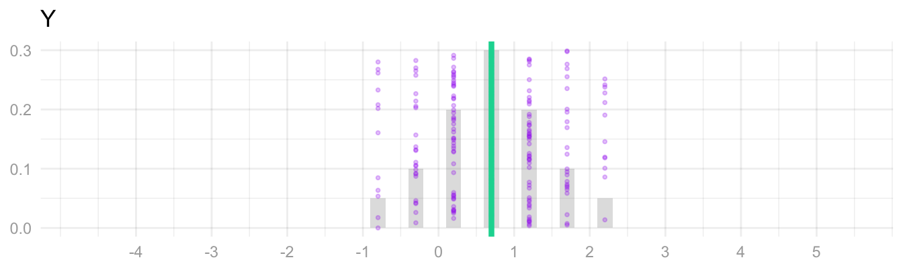
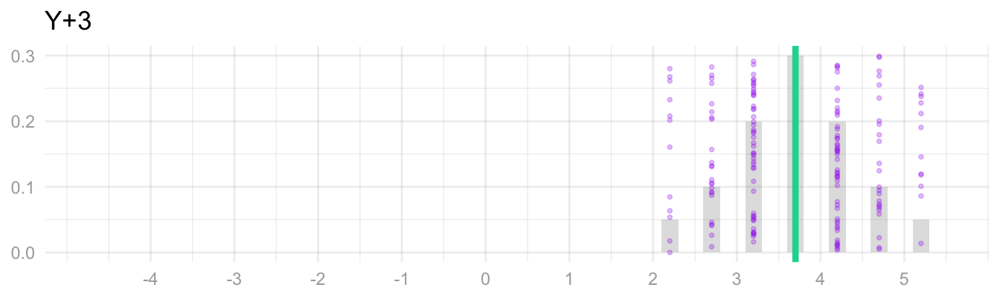
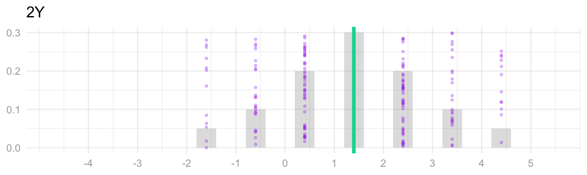
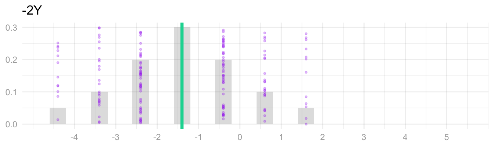
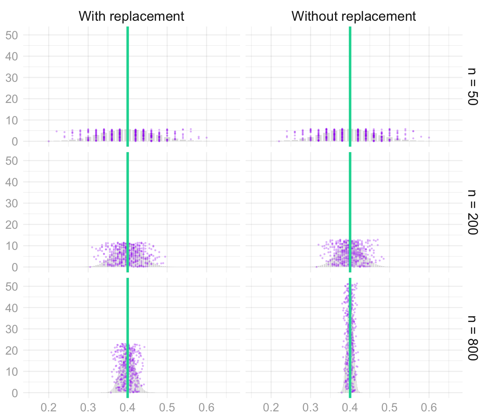
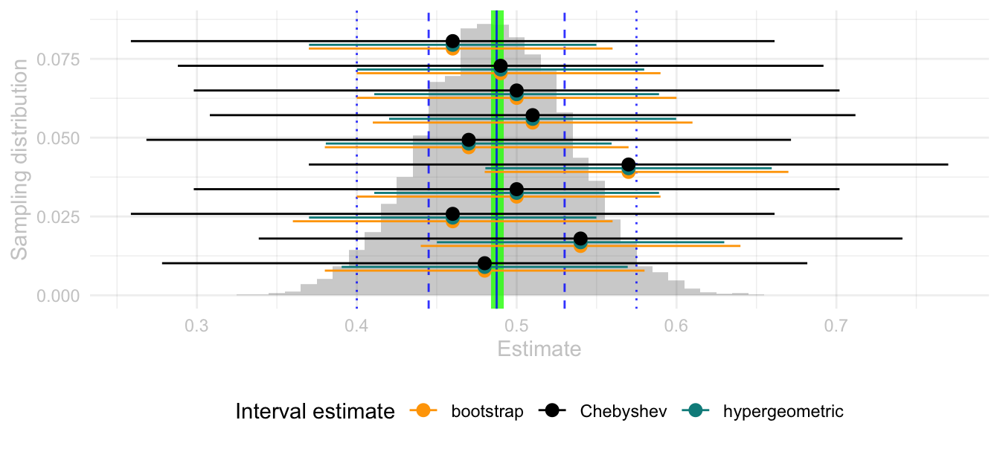
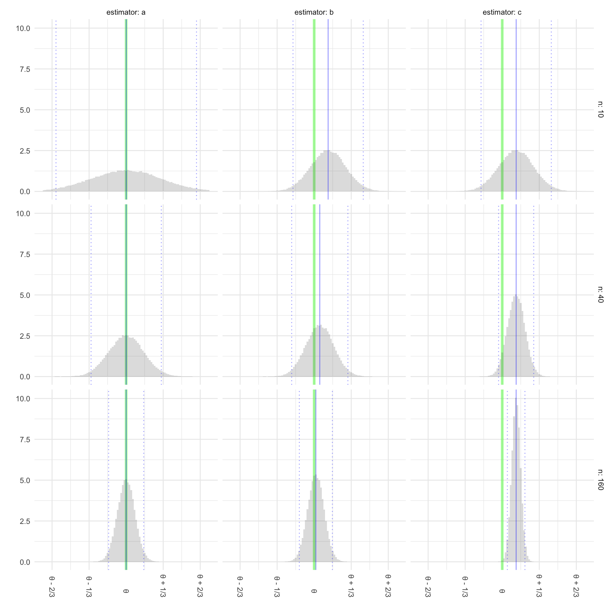
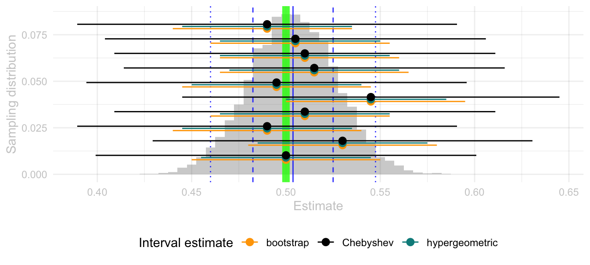

class.theme = theme(plot.background = element_rect(fill = "transparent", colour = NA),
panel.background = element_rect(fill = "transparent", colour = NA),
legend.background = element_rect(fill="transparent", colour = NA),
legend.box.background = element_rect(fill="transparent", colour = NA),
legend.key = element_rect(fill="transparent", colour = NA),
axis.ticks.x = element_blank(),
axis.ticks.y = element_blank(),
axis.text.x = element_text(colour = "#aaaaaa"),
axis.text.y = element_text(colour = "#aaaaaa"),
axis.title.x = element_text(colour = "#aaaaaa"),
axis.title.y = element_text(colour = "#aaaaaa", angle=90)
)
theme_set(class.theme)
theme_update(axis.title.x = element_blank(),
axis.title.y = element_blank())
simplified.theme = theme_get()
theme_update(axis.text.x = element_blank(),
axis.text.y = element_blank())
blank.theme = theme_get()
theme_update(panel.grid.major=element_line(color=rgb(1,0,0,.1, maxColorValue=1)),
panel.grid.minor=element_line(color=rgb(0,1,0,.1, maxColorValue=1)))
grid.theme = theme_get()
whitebg.theme = function(lightgray="#cccccc", gridcolor=rgb(0,0,0,.07, maxColorValue=1), labs=FALSE) {
theme(
plot.background = element_rect(fill = "transparent", colour = NA),
panel.background = element_rect(fill = "transparent", colour = NA),
legend.background = element_rect(fill="transparent", colour = NA),
legend.box.background = element_rect(fill="transparent", colour = NA),
legend.key = element_rect(fill="transparent", colour = NA),
axis.ticks.x = element_blank(),
axis.ticks.y = element_blank(),
axis.text.x = element_text(colour = lightgray),
axis.text.y = element_text(colour = lightgray),
axis.title.x = if(labs) { element_text(colour=lightgray) } else { element_blank() },
axis.title.y = if(labs) { element_text(colour=lightgray, angle=90) } else { element_blank() },
panel.grid.major=element_line(colour=gridcolor),
panel.grid.minor=element_line(colour=gridcolor, linewidth=0.25))
}
labs = function(...) { list(ggplot2::labs(...), whitebg.theme(labs=TRUE)) }
whitebw.theme = whitebg.theme
# Plots without labs() inherit the global theme: leave it on class.theme, not the debug grid above.
theme_set(simplified.theme)Homework — Random Variables, Moments, and the Standard Deviation
# These are the HTML entities for shapes we use in the text.
# This lets us write `r circle` instead of ● when we want a circle.
triangle = '▲'
circle = '●'
pointrange = '⍿'
filled = list(
downtriangle = 25,
uptriangle = 24,
diamond = 23,
square = 22,
circle = 21)
comparison_styles = list(
scale_shape_manual(values=c('0'=filled$downtriangle, '1'=filled$uptriangle)),
guides(shape='none', color='none', fill='none'))twocolor.red = rgb(248,118,109, maxColorValue=255)
twocolor.green = rgb(0,191,196, maxColorValue=255)
groupa = twocolor.red
groupb = twocolor.green
pink = '#ef476f' # rgb(239,71,111)
mustard = '#ffd166' # rgb(255,209,102)
green = '#06d6a0' # rgb(6, 214,160)
teal = '#118ab2' # rgb(17,138,178)
midnight = '#073b4c' # rgb(7,59,76)
# fwiw, col2rgb is a function that converts a color to its RGB values
map.background = green
polla = midnight
pollb = pink
pollc = teal
polld = green
polle = mustard
# THESE COLORS ARE DEFINED IN class.scss, TOO. IF YOU CHANGE THEM HERE, CHANGE THEM THERE.$$ \newcommand{X}{} \newcommand{Y}{} % A hex digit after # inside a macro body is eaten by build-time expansion, so digit-leading hexes spell # via .
$$
ellipsis = function(df, nhead=5L, ntail=2) {
rownames(df) = if(is.null(rownames(df))) {
as.character(1:nrow(df))
} else {
as.character(rownames(df))
}
stopifnot("data.frame" %in% class(df))
els = rep(NA, ncol(df)) |>
matrix(nrow=1, dimnames=list(NULL, names(df))) |>
data.frame(stringsAsFactors=FALSE) |>
as_tibble()
rownames(els) = "⋮"
dplyr::bind_rows(head(df, nhead), els, tail(df, ntail))
}
options(knitr.kable.NA = '')with_seed = function(x, seed=default.seed) {
had_seed = exists(".Random.seed", envir=.GlobalEnv, inherits=FALSE)
if(had_seed) {
old_seed = get(".Random.seed", envir=.GlobalEnv, inherits=FALSE)
}
on.exit({
if(had_seed) {
assign(".Random.seed", old_seed, envir=.GlobalEnv)
} else if(exists(".Random.seed", envir=.GlobalEnv, inherits=FALSE)) {
rm(".Random.seed", envir=.GlobalEnv)
}
}, add=TRUE)
set.seed(seed)
force(x)
}set.seed(1)
sample(1:5)
sample(1:5)
set.seed(1)
sample(1:5)
sample(1:5) |> with_seed(1)
sample(1:5)mean_sd = function(x, mult = 1) { mean_se(x, mult = mult*sqrt(length(stats::na.omit(x)))) }summary.lookup = function(column.name, summaries, default=NA) {
function(w,x) {
out = left_join(data.frame(w=w,x=x),
summaries[, c('w','x',column.name)],
by=c('w','x')) |>
pull(column.name)
out[is.na(out)] = default
out
}
}coarsen = function(x, group, seed=0) {
({
x.coarsened = rep(NA, length(x))
for(gg in unique(group)) {
x.coarsened[group==gg] = runif(sum(group==gg), min(x[group==gg]), max(x[group==gg]))
}
x.coarsened
}) |> with_seed(seed)
} binary.search = function(f, target, limits, steps = 50) {
for(i in 1:steps) {
middle = mean(limits)
if(f(middle) < target) limits[1] = middle else limits[2] = middle
}
limits[2]
}
width = function(draws, center = mean(draws), alpha = .05) {
coverage = function(w) {
mean(center - w / 2 <= draws & draws <= center + w / 2)
}
binary.search(coverage, 1 - alpha,
c(0, 2 * max(abs(draws - center))))
}
# Continuous CDFs only; discrete distributions use the integer-support wrappers below.
width_cdf = function(cdf, center, limits, alpha=.05) {
coverage = function(w) {
cdf(center + w/2) - cdf(center - w/2)
}
binary.search(coverage, 1-alpha, limits)
}
width_binom = function(theta, n, alpha=.05) {
if(theta == 0 || theta == 1) { return(0) }
coverage = function(w) {
pbinom(floor(n*(theta+w/2)), n, theta) -
pbinom(ceiling(n*(theta-w/2))-1, n, theta)
}
binary.search(coverage, 1-alpha, c(0, 2*max(theta, 1-theta)))
}
width_hyper = function(theta, n, m, alpha=.05) {
if(theta == 0 || theta == 1) { return(0) }
coverage = function(w) {
phyper(floor(n*(theta+w/2)), m*theta, m*(1-theta), n) -
phyper(ceiling(n*(theta-w/2))-1, m*theta, m*(1-theta), n)
}
binary.search(coverage, 1-alpha, c(0, 2*max(theta, 1-theta)))
}default.dot.size = 2
default.highlight.colors = c(polla, pollb, pollc, polld)
default_height = function(samples) { dnorm(0, mean=0, sd=sd(samples)) }
# fussy code to make sure the heights of the highlighted
# dots don't change when the total number of dots changes
annotation_dot_heights = function(dots, highlight.dots, height, seed=default.seed) {
heights = ({
highlight.dot.heights = sample(1:highlight.dots)/(highlight.dots + 1)
unhighlighted.dot.heights = setdiff(sample(1:dots), 1:highlight.dots)/(dots + 1)
height*c(highlight.dot.heights[1:min(dots,highlight.dots)],
unhighlighted.dot.heights)
}) |> with_seed(seed)
heights
}
with_annotations = function(samples,
estimand = NA,
shade.center = mean(samples),
shade.width = NA, shade.color='green', shade.alpha=.15,
dots=100, interval.width=NA,
dot.size = default.dot.size,
highlight.dots=3,
highlighted.dot.alpha=1,
unhighlighted.dot.alpha=.15,
height=default_height(samples), vline.alpha=.8,
seed=default.seed) {
highlight.colors = if(highlight.dots) default.highlight.colors[1:min(dots,highlight.dots)] else c()
summary.data = data.frame(
mus=mean(samples),
mu=shade.center,
w66 = width(samples, alpha=1/3),
w95 = width(samples, alpha=.05),
shade.width=shade.width,
estimand=estimand)
estimand.geom = if(is.na(summary.data$estimand)) geom_blank() else
geom_vline(aes(xintercept=estimand),
color='green', linewidth=3, alpha=.8,
data=summary.data)
shade.geom = if(is.na(summary.data$shade.width)) geom_blank() else
geom_rect(aes(xmin=mu-shade.width/2,
xmax=mu+shade.width/2, ymin=0, ymax=Inf),
fill=shade.color, alpha=shade.alpha,
data=summary.data)
dot.geom = if(dots == 0) geom_blank() else {
heights = annotation_dot_heights(dots, highlight.dots, height, seed)
dot.data = data.frame(
x=samples[1:dots],
y=heights,
w=interval.width,
color=c(highlight.colors,
rep('purple', dots-length(highlight.colors))),
alpha=c(rep(highlighted.dot.alpha, length(highlight.colors)),
rep(unhighlighted.dot.alpha, dots-length(highlight.colors))))
if(any(is.na(interval.width)))
geom_point(aes(y=y, x=x, color=I(color), alpha=I(alpha)),
size=dot.size, data=dot.data)
else
geom_pointrange(aes(y=y, x=x, xmin=x-w/2, xmax=x+w/2, color=I(color), alpha=I(alpha)),
size=dot.size/4, linewidth=dot.size/4, data=dot.data)
}
vlines = if(is.na(vline.alpha)) geom_blank() else {
list(geom_vline(aes(xintercept=mus), color="blue", data=summary.data, alpha=vline.alpha),
geom_vline(aes(xintercept=mus-w66/2), color="blue", linetype='dashed', data=summary.data, alpha=vline.alpha),
geom_vline(aes(xintercept=mus+w66/2), color="blue", linetype='dashed', data=summary.data, alpha=vline.alpha),
geom_vline(aes(xintercept=mus-w95/2), color="blue", linetype='dotted', data=summary.data, alpha=vline.alpha),
geom_vline(aes(xintercept=mus+w95/2), color="blue", linetype='dotted', data=summary.data, alpha=vline.alpha))
}
geoms = list(estimand.geom, shade.geom, dot.geom, vlines)
geoms
}Reminder: put each answer in its answer block. Working on paper is fine—photograph it and include it with  (image in the same folder as this file).
\[ \newcommand{\thetaprior}{\theta^{\text{prior}}} \newcommand{\nprior}{n^{\text{prior}}} \newcommand{\yprior}{y^{\text{prior}}} \]
The Rules
We’ve been using the rules of probability and expectation all semester without ever writing them down. Here they are, against something we actually did: the two calls to the population \(0,0,0,1\) from the chapter. Each row is a call sequence, colored by the pair of responses \((Y_1, Y_2)\) it produces: purple for \((0,0)\), pink for \((1,0)\), blue for \((0,1)\), and green for \((1,1)\).
| J1 | J2 | Y1 | Y2 | With replacement | Without replacement |
|---|---|---|---|---|---|
| 1 | 1 | 0 | 0 | 1/16 | 0 |
| 1 | 2 | 0 | 0 | 1/16 | 1/12 |
| 1 | 3 | 0 | 0 | 1/16 | 1/12 |
| 2 | 1 | 0 | 0 | 1/16 | 1/12 |
| 2 | 2 | 0 | 0 | 1/16 | 0 |
| 2 | 3 | 0 | 0 | 1/16 | 1/12 |
| 3 | 1 | 0 | 0 | 1/16 | 1/12 |
| 3 | 2 | 0 | 0 | 1/16 | 1/12 |
| 3 | 3 | 0 | 0 | 1/16 | 0 |
| 1 | 4 | 0 | 1 | 1/16 | 1/12 |
| 2 | 4 | 0 | 1 | 1/16 | 1/12 |
| 3 | 4 | 0 | 1 | 1/16 | 1/12 |
| 4 | 1 | 1 | 0 | 1/16 | 1/12 |
| 4 | 2 | 1 | 0 | 1/16 | 1/12 |
| 4 | 3 | 1 | 0 | 1/16 | 1/12 |
| 4 | 4 | 1 | 1 | 1/16 | 0 |
Probabilities. The rules are these.
- Nothing has negative probability.
- If you want to know the probability that one of two outcomes happens, add their probabilities.
In notation, \[ \begin{aligned} &P(X=x) \ge 0, \\ &P(X=x \text{ or } X=x') = P(X=x) + P(X=x') \quad\text{ if }\quad x \ne x'. \end{aligned} \]
What’s the \(x \ne x'\) thing about? Well, in the case that \(x = x'\), if we said the probability that \(X=1\) or \(X=1\), that’s just the probability that \(X=1\). So that can’t be two times the probability that \(X=1\). That’s obvious in this case. But sometimes people can get a little confused when they talk in more general terms. For example, they might talk about the probability that the total \(Y_1+Y_2\) is at least one. Their way of thinking about that would be that it happens if \(Y_1=1\) or if \(Y_2=1\), and then they would go to sum those two probabilities. But when you think about it in terms of the table, what they’re doing is summing the pink and green rows and then adding it to the sum of the blue and green rows. They’re counting the green rows twice. That’s making the same mistake: \[ P(Y_1+Y_2 \ge 1) \ne P(Y_1=1) + P(Y_2=1). \]
More generally, if you want to know whether anything in two sets of outcomes happens, you can add their probabilities if the sets are not overlapping. In the table, that says we can add the probabilities of the blue rows and the purple rows to get the probability of a blue or purple row. What we can’t do is double count rows. And that can happen if you’re not careful.
So you can take any sets of outcomes and get the probability that one or the other of them is true, if those sets are not overlapping. The usual math terminology for nonoverlapping is disjoint, and we call this property of probabilities disjoint additivity.
Exercise 1 (Reading the Table)
- Add up the probabilities in the pink rows, first with replacement and then without. What event has that probability?
- Add up the probabilities in the pink rows and the green rows together. What event has that probability?
- Add up the probabilities in all the rows. What number do you get, and why?
- The pink rows are the call sequences where the first response is one and the second is zero, so the sum is \(P(Y_1=1 \text{ and } Y_2=0)\): \(3/16\) with replacement and \(3/12=1/4\) without.
- Pink and green together are the rows where the first response is one, so the sum is \(P(Y_1=1)\): \(4/16=1/4\) with replacement and \(3/12=1/4\) without.
- One, under either scheme. The rows cover every possible call sequence, and no two of them overlap.
Expectations
The expectation of \(X\) is its probability-weighted average, \(\operatorname{E}[X]=\sum_x xP(X=x)\). In the table, you’d get it by multiplying each row’s value of \(X\) by that row’s probability and adding them up.
Linearity says the expectation of a sum is the sum of the expectations, and constants come out in front: \[ \operatorname{E}[aY+bZ] = a\operatorname{E}[Y]+b\operatorname{E}[Z]. \] In the table, you could add a total column, the first-response column plus the second, and its expectation would be the two expectations added. This is true whether or not \(Y\) and \(Z\) are independent.
Two things to remember.
- Adding a constant to a random variable moves its mean by that constant and leaves its spread alone.
- Multiplying by a constant \(a\) multiplies the mean by \(a\), the standard deviation by \(|a|\), and the variance by \(a^2\).
Exercise 2 (Shifts and Scales) Here is the distribution of a random variable \(Y\), with its mean marked.

Explain each of these in words and with a picture.
- What happens to the mean and the standard deviation when we add 3 to \(Y\)?
- What happens to them when we multiply \(Y\) by 2? By \(-2\)? What happens to the variance?
- A constant \(c\) is a random variable that is always equal to \(c\). What are its mean and standard deviation?
TipHint
What does the distribution of a constant look like?




- Every dot moves right by 3, and so does the mean. The distances from the mean don’t change, so the spread doesn’t either: \(\operatorname{E}[Y+3]=\operatorname{E}[Y]+3\) and \(\operatorname{sd}(Y+3)=\operatorname{sd}(Y)\).
- Every dot moves to twice its value, so the picture stretches: the mean doubles and so does every distance from it, \(\operatorname{E}[2Y]=2\operatorname{E}[Y]\) and \(\operatorname{sd}(2Y)=2\operatorname{sd}(Y)\). Multiplying by \(-2\) flips the picture to the other side of zero and stretches it the same way: \(\operatorname{E}[-2Y]=-2\operatorname{E}[Y]\) and \(\operatorname{sd}(-2Y)=2\operatorname{sd}(Y)\). The variance is the standard deviation squared, so it is multiplied by \(4\) both times.
- All the dots sit on one point, \(c\). The mean is \(c\) and the standard deviation is \(0\).
Indicators. An indicator is one when something happens and zero when it doesn’t. We used them in class to turn a probability into an expectation. We’ll use one for each color in the table: \(1_{\textcolor{#7756a8}{P}}\) is one in the purple rows, where both responses are zero; \(1_{\textcolor{#06D6A0}{G}}\) in the green rows, where both are one; \(1_{\textcolor{#EF476F}{R}}\) in the pink rows, where the first is one and the second zero; and \(1_{\textcolor{#118AB2}{B}}\) in the blue rows, where the second is one and the first zero. An indicator only takes the values zero and one, so its probability-weighted average is the probability of its rows: \[ \operatorname{E}[1_{\textcolor{#7756a8}{P}}] = 0\cdot P(\text{not purple}) + 1\cdot P(\text{purple}) = P(Y_1=0 \text{ and } Y_2=0), \] \(9/16\) with replacement and \(1/2\) without.
Exercise 3 (Adding Indicators)
- What values can \(1_{\textcolor{#7756a8}{P}}+1_{\textcolor{#06D6A0}{G}}\) take, and in which rows is it one? What is it the indicator of?
- Take its expectation using linearity. What rule about probabilities did you just get back?
- Now take \(1_{\textcolor{#EF476F}{R}}+1_{\textcolor{#06D6A0}{G}}\), the indicator that \(Y_1=1\), plus \(1_{\textcolor{#118AB2}{B}}+1_{\textcolor{#06D6A0}{G}}\), the indicator that \(Y_2=1\). Is the sum still an indicator? Why or why not?
- No row is both purple and green, so the sum is zero or one, and it is one in the purple rows and the green rows. It is the indicator that the two responses are equal.
- \(P(\text{both zero or both one}) = \operatorname{E}[1_{\textcolor{#7756a8}{P}} + 1_{\textcolor{#06D6A0}{G}}] = \operatorname{E}[1_{\textcolor{#7756a8}{P}}] + \operatorname{E}[1_{\textcolor{#06D6A0}{G}}] = 9/16 + 1/16 = 10/16\) with replacement, and \(1/2 + 0 = 1/2\) without. That is disjoint additivity.
- The sum is two in the green rows, where both responses are one. It is not an indicator. Its expectation, \(1/4 + 1/4 = 1/2\), counts the green rows twice, and \(P(Y_1=1 \text{ or } Y_2=1)\) is \(7/16\) with replacement, not \(1/2\).
Variances
The variance of \(X\) is the probability-weighted average of its squared distance from its mean, and the standard deviation is its square root. Write \(Z=X-\operatorname{E}[X]\) for the centered version of \(X\), so that \(\operatorname{V}(X)=\operatorname{E}[Z^2]\). In the table, you’d get it by subtracting the mean from each row’s value of \(X\), squaring, and averaging those with the row probabilities. Shifts and scales are covered by the two things to remember above.
Independence. Two random variables are independent when their joint probabilities are the products of their separate ones, \[ P(Y_1=y_1 \text{ and } Y_2=y_2) = P(Y_1=y_1)P(Y_2=y_2). \] The two probability columns of the table differ on exactly this. Each response on its own is one with probability \(1/4\) under either scheme. With replacement, the purple rows have probability \(9/16 = \frac34 \cdot \frac34\), and every other color works out the same way: each joint probability is the product of the two marginal ones. Without replacement they are not. The purple rows have probability \(1/2\) rather than \(9/16\), and the green row is impossible rather than \(1/16\), because a call that reaches our one person rules that person out for the second call.
Products. The expectation of a product is the product of the expectations, and the same holds for functions of them: \[ \operatorname{E}[f(Y_1)g(Y_2)] = \operatorname{E}[f(Y_1)]\operatorname{E}[g(Y_2)] \quad\text{ if }\quad Y_1 \text{ and } Y_2 \text{ are independent}. \] We use it on the centered responses \(Z_i=Y_i-\operatorname{E}[Y_i]\). Those have mean zero, so the expectation of their product is \[ \operatorname{E}[Z_1Z_2] = \operatorname{E}[Z_1]\operatorname{E}[Z_2] = 0 \times 0 \quad\text{ if }\quad Y_1 \text{ and } Y_2 \text{ are independent}. \] Without replacement that product has expectation \(-1/16\) instead.
Variances of sums. Squaring a sum of two things leaves two squares and two products, so \[ \operatorname{V}(Y_1+Y_2) = \operatorname{E}[(Z_1+Z_2)^2] = \operatorname{E}[Z_1^2] + \operatorname{E}[Z_1Z_2] + \operatorname{E}[Z_2Z_1] + \operatorname{E}[Z_2^2]. \] Linearity takes us this far under either sampling scheme. The two squares are the two variances. What is left are the two cross terms, and when the responses are independent those are \(\operatorname{E}[Z_1]\operatorname{E}[Z_2] = 0 \times 0\), which leaves \[ \operatorname{V}(Y_1+Y_2) = \operatorname{V}(Y_1) + \operatorname{V}(Y_2) \quad\text{ if }\quad Y_1 \text{ and } Y_2 \text{ are independent}. \] Variances add when the things being added are independent. And that’s why. In the table that is \(3/16+3/16=3/8\) with replacement. Without replacement each cross term is \(-1/16\), and the variance of the total is \(1/4\), which is smaller.
Variance when Sampling with Replacement
Exercise 4 (Rolling a Die) Roll a fair six-sided die \(n\) times, independently. Let \(Y_i\) be the number on roll \(i\).
- Calculate \(\operatorname{E}[Y_1]\) and \(\operatorname{V}(Y_1)\).
- Calculate the mean and variance of the total \(Y_1+\cdots+Y_n\).
- Calculate the mean and variance of the average \(\bar Y\).
Each number from 1 to 6 has probability \(1/6\), so \[ \operatorname{E}[Y_1]=\frac{1+2+3+4+5+6}{6}=\frac72. \] The variance is the average squared distance from \(7/2\). The distances are \(\pm\frac52\), \(\pm\frac32\), \(\pm\frac12\), so \[ \operatorname{V}(Y_1)=\frac{2\cdot\frac{25}{4}+2\cdot\frac94+2\cdot\frac14}{6}=\frac{35}{12}. \] Linearity implies the mean of the total is \(7n/2\). For its variance, center each roll, \(Z_i=Y_i-\frac72\), and square the sum: \[ \operatorname{V}(Y_1+\cdots+Y_n) = \operatorname{E}\left[\left(\sum_{i=1}^n Z_i\right)^2\right] = \sum_{i=1}^n\sum_{j=1}^n \operatorname{E}[Z_iZ_j]. \] There are \(n\) terms with \(i=j\), each the variance of one roll, \(\operatorname{E}[Z_i^2]=35/12\). There are \(n(n-1)\) terms with \(i \ne j\), and the rolls are independent, so each of those is zero by the product rule in Variances. Only the \(n\) squares remain, \[ \operatorname{E}[Y_1+\cdots+Y_n]=\frac{7n}{2},\qquad \operatorname{V}(Y_1+\cdots+Y_n)=\frac{35n}{12}. \] Dividing the total by \(n\) divides its mean by \(n\) and its variance by \(n^2\), \[ \operatorname{E}[\bar Y]=\frac72,\qquad \operatorname{V}(\bar Y)=\frac{35}{12n}. \]
Exercise 5 (Counting Ones) Now let \(Y_1\ldots Y_n\) be independent draws, each equal to one with probability \(\theta\) and zero with probability \(1-\theta\).
- Calculate \(\operatorname{E}[Y_1]\) and \(\operatorname{V}(Y_1)\).
- Calculate the mean and variance of the number of ones \(Y_1+\cdots+Y_n\).
- Calculate the mean and variance of the proportion of ones \(\bar Y\).
\(\operatorname{E}[Y_1]=\theta\). The distance from \(\theta\) is \(1-\theta\) with probability \(\theta\) and \(-\theta\) with probability \(1-\theta\), so \[ \operatorname{V}(Y_1)=\theta(1-\theta)^2+(1-\theta)\theta^2=\theta(1-\theta). \] The total is a sum of \(n\) independent draws, so it is the same expansion as the die with \(\theta(1-\theta)\) in place of \(35/12\): the \(n\) squared terms each contribute \(\theta(1-\theta)\) and the \(n(n-1)\) cross terms are zero. \[ \operatorname{E}[Y_1+\cdots+Y_n]=n\theta,\qquad \operatorname{V}(Y_1+\cdots+Y_n)=n\theta(1-\theta). \] Dividing by \(n\) to get the proportion implies \[ \operatorname{E}[\bar Y]=\theta,\qquad \operatorname{V}(\bar Y)=\frac{\theta(1-\theta)}{n}. \]
Sampling Without Replacement
When we talked about the hypergeometric distribution, we got the distribution of a pair of responses when we sample without replacement from a binary population of any size. In Means and Markov’s Inequality we did the special case of a population of size four. For a binary population \(y_1 \ldots y_m\) with \(m_0\) zeros and \(m_1\) ones, \(m>1\), these are the distributions of one response and of a pair.
| \(p\) | \(Y_1\) |
|---|---|
| \(\frac{m_0}{m}\) | 0 |
| \(\frac{m_1}{m}\) | 1 |
| \(p\) | \(Y_1\) | \(Y_2\) | |
|---|---|---|---|
| \(\frac{m_0(m_0-1)}{m(m-1)}\) | 0 | 0 | |
| \(\frac{m_0m_1}{m(m-1)}\) | 0 | 1 | |
| \(\frac{m_0m_1}{m(m-1)}\) | 1 | 0 | |
| \(\frac{m_1(m_1-1)}{m(m-1)}\) | 1 | 1 |
You can go ahead and cross out the \(Y_1\) in the first table and write in \(Y_i\), because this is the marginal distribution of every individual observation \(Y_i\) when we draw a sample without replacement of any size \(n\). You can cross out \(Y_1\) and \(Y_2\) in the second table and write in \(Y_i\) and \(Y_j\) for the same reason: it’s the joint distribution of any pair \((Y_i, Y_j)\) for \(i\neq j\) when we draw a sample without replacement of any size \(n\). This makes them a lot more useful.
To justify this, we can do a simple two-step thought experiment. We’ll think of drawing a sample without replacement as the process of shuffling a deck of cards labeled 1 … m, then drawing the first \(n\) cards off the top. Letting \(J_1\) be what the first card says, \(J_2\) what the second one says, and so on, our sample \(Y_1 \ldots Y_n\) is \(y_{J_1} \ldots y_{J_n}\). Here’s our argument.
No matter how many cards we’re going to draw, the distribution of the first card is the same. Same with the first two cards. Thus, what we’ve written above is the marginal distribution of \(Y_1\) and the joint distribution of \((Y_1,Y_2)\) when we make any number of calls \(n\).
If we’d pulled off the first \(n\) cards and then counted from the bottom instead of the top, we’d get the same distribution. They’re shuffled, after all. So the marginal distributions of \(Y_1\) and \(Y_n\) are the same and so are the joint distributions of \((Y_1,Y_2)\) and \((Y_n,Y_{n-1})\). The same thing would be true if we went through our top \(n\) cards in any order. Thus, the marginal distributions of \(Y_i\) are the same for all \(i\) and the joint distributions of \((Y_i,Y_j)\) are the same for all \(i \neq j\).
We’ve left a column open in the second table for you to use if you’d like. The population mean is \(\theta=m_1/m\), and the centered response is \[ Z_i = Y_i - \theta = \begin{cases} -\theta & \text{if } Y_i = 0, \\ 1-\theta & \text{if } Y_i = 1. \end{cases} \]
Now let’s use this to calculate the variance of our sample proportion \(\hat\theta=\frac{1}{n}\sum_{i=1}^{n}Y_i\). In the chapter, we squared out \(\frac1n\sum_i Z_i\) and took expectations. That left two kinds of term. The squares, \(\operatorname{E}[Z_i^2]=\theta(1-\theta)\), the same for every call. And the cross terms, \(\operatorname{E}[Z_iZ_j]\) for \(i \ne j\). With replacement, the cross terms are zero. Without replacement, they aren’t. We get them from the table above.
Do either version of The Cross Term below.
The Easy Way
Let’s start by rewriting this expression so it’s a little easier to work with. Like this.
\[ \operatorname{E}[Z_iZ_j] = \operatorname{E}\left[ (Y_i - \operatorname{E}[Y_i])(Y_j - \operatorname{E}[Y_j]) \right] = \operatorname{E}[Y_i Y_j] - \operatorname{E}[Y_i]\operatorname{E}[Y_j] \]
TipProof of Equivalence
To show that these two expressions are equivalent, we ‘multiply out’ \((Y_i - \operatorname{E}[Y_i])(Y_j - \operatorname{E}[Y_j])\) to get four terms, distribute the expectation and pull out constants, and cancel some equal-and-opposite terms in the result.
\[ \begin{aligned} \operatorname{E}\left[ (Y_i - \operatorname{E}[Y_i])(Y_j - \operatorname{E}[Y_j]) \right] &= \operatorname{E}\left[ Y_i Y_j - Y_i\operatorname{E}[Y_j] - Y_j\operatorname{E}[Y_i] + \operatorname{E}[Y_i]\operatorname{E}[Y_j] \right] \\ &= \operatorname{E}\left[ Y_i Y_j \right] - \operatorname{E}\left[ Y_i\operatorname{E}[Y_j] \right] - \operatorname{E}\left[ Y_j\operatorname{E}[Y_i] \right] + \operatorname{E}\left[ \operatorname{E}[Y_i]\operatorname{E}[Y_j] \right] \\ &= \operatorname{E}\left[ Y_i Y_j \right] - \operatorname{E}[Y_i]\operatorname{E}[Y_j] - \operatorname{E}[Y_j]\operatorname{E}[Y_i] + \operatorname{E}[Y_i]\operatorname{E}[Y_j] \\ &= \operatorname{E}\left[ Y_i Y_j \right] - \operatorname{E}[Y_i]\operatorname{E}[Y_j] \end{aligned} \]
What’s nice about this second form is that using our tables above to calculate these expectations is easy. We actually have a column for \(Y_i\) in our marginal table and can use the blank column in our joint table for \(Y_i Y_j\). I’d like to ask you to calculate the thing, but since it’d probably take a little arithmetic to manipulate what you get into the form \(-\frac{\theta(1-\theta)}{m-1}\) we need, I’m going to ask you to verify my calculation instead.
Exercise 6 (The Cross Term) You can write out the joint probability table above in your solution, adding a column for \(Y_1Y_2\).
Using this equivalent form, and the tables above, show that the following identity is true. \[ \operatorname{E}\left[ (Y_i - \operatorname{E}[Y_i])(Y_j - \operatorname{E}[Y_j]) \right] = \frac{m_1(m_1-1)}{m(m-1)}-\frac{m_1^2}{m^2} \]
\(Y_iY_j\) is 1 if both \(Y_i\) and \(Y_j\) are 1 and otherwise zero, so \(\operatorname{E}[Y_iY_j]\) is the probability that both \(Y_i\) and \(Y_j\) are 1. Referring to our joint distribution table above, that’s \(\frac{m_1(m_1-1)}{m(m-1)}\). That’s our first term. And because we’ve sampled uniformly-at-random, expected value of \(Y_i\) (and \(Y_j\)) is \(\theta=m_1/m\), the population mean, so the product of the expectations is \(\theta^2=(m_1/m)^2\). Subtracting these, as in our new ‘equivalent formula’ for the cross term, gives us the result we’re looking for.
Simplifying this into the form \(-\frac{\theta(1-\theta)}{m-1}\) is a little bit of work. As usual, the trick is to give your two terms a common denominator and see what cancels.
I’ll save you the trouble, but I’ll ‘fold’ it like I usually do solutions, so if you’d like to try it on your own, you can without the solution staring you in the face. If you do just want to read it, expand the box by clicking on it.
TipSimplifying our Cross-Term
\[ \begin{aligned} \frac{m_1(m_1-1)}{m(m-1)}-\frac{m_1^2}{m^2} &= \frac{m_1(m_1-1)m - m_1^2(m-1)}{m^2(m-1)} && \text{ getting a common denominator} \\ &= \frac{ (m_1^2 m - m_1m) - (m_1^2 m - m_1^2)}{m^2(m-1)} && \text{ expanding products} \\ &= \frac{ m_1^2 - m_1m}{m^2(m-1)} && \text{ canceling equal and opposite terms} \\ &= \frac{ m_1(m_1 - m)}{m^2(m-1)} && \text{ pulling out common factors} \\ &= \frac{m_1}{m} \cdot \frac{m_1-m}{m} \times \frac{1}{m-1} && \text{ grouping factors in the numerator and denominator} \\ &= \theta (\theta - 1) \times \frac{1}{m-1} && \text{ for } \ \theta = \frac{m_1}{m} \\ &= -\frac{\theta(1-\theta)}{m-1} && \text{ as desired } \end{aligned} \]
The Hard Way
Alternatively, we can calculate the same cross term directly: multiply the centered responses, then average using the probabilities in the table.
Exercise 7 (The Cross Term)
- Write out the joint probability table above in your solution, adding a column for \(Z_1Z_2\). Calculate the entries using \(\theta=m_1/m\).
- Multiply each product by its probability and add, and show that \[ \operatorname{E}[Z_iZ_j] = \frac{m_0(m_0-1)\,\theta^2 - 2\,m_0m_1\,\theta(1-\theta) + m_1(m_1-1)\,(1-\theta)^2}{m(m-1)}. \]
A centered response is \(-\theta\) when \(Y_i=0\) and \(1-\theta\) when \(Y_i=1\), so the product is \(\theta^2\) when both responses are zero, \(-\theta(1-\theta)\) when they differ, and \((1-\theta)^2\) when both are one.
\(p\) \(Y_1\) \(Y_2\) \(Z_1Z_2\) \(\frac{m_0(m_0-1)}{m(m-1)}\) 0 0 \(\theta^2\) \(\frac{m_0m_1}{m(m-1)}\) 0 1 \(-\theta(1-\theta)\) \(\frac{m_0m_1}{m(m-1)}\) 1 0 \(-\theta(1-\theta)\) \(\frac{m_1(m_1-1)}{m(m-1)}\) 1 1 \((1-\theta)^2\) Multiplying each product by its row’s probability and adding the four rows implies \[ \begin{aligned} \operatorname{E}[Z_iZ_j] &= \frac{m_0(m_0-1)}{m(m-1)}\,\theta^2 + 2\cdot\frac{m_0m_1}{m(m-1)}\,\{-\theta(1-\theta)\} + \frac{m_1(m_1-1)}{m(m-1)}\,(1-\theta)^2 \\ &= \frac{m_0(m_0-1)\,\theta^2 - 2\,m_0m_1\,\theta(1-\theta) + m_1(m_1-1)\,(1-\theta)^2}{m(m-1)}. \end{aligned} \] The two middle rows carry the same product and the same probability, which is where the \(2\) comes from.
Simplifying this into the form \(-\frac{\theta(1-\theta)}{m-1}\) is a little bit of work. The trick is to write everything in terms of \(m_0\) and \(m_1\) and see what cancels. I’ll save you the trouble, but I’ll fold it like I usually do solutions, so if you’d like to try it on your own, you can without the solution staring you in the face.
TipSimplifying our Cross-Term
\[ \begin{aligned} \operatorname{E}[Z_iZ_j] &= \frac{m_0(m_0-1)m_1^2 - 2m_0^2m_1^2 + m_1(m_1-1)m_0^2}{m^2\,m(m-1)} && \text{for } \theta=\tfrac{m_1}{m},\ 1-\theta=\tfrac{m_0}{m} \\ &= \frac{m_0^2m_1^2 - m_0m_1^2 - 2m_0^2m_1^2 + m_0^2m_1^2 - m_0^2m_1}{m^3(m-1)} && \text{expanding products} \\ &= \frac{-m_0m_1^2 - m_0^2m_1}{m^3(m-1)} && \text{canceling equal and opposite terms} \\ &= \frac{-m_0m_1(m_0+m_1)}{m^3(m-1)} && \text{pulling out common factors} \\ &= -\frac{m_0}{m}\cdot\frac{m_1}{m}\cdot\frac{1}{m-1} && \text{for } m_0+m_1=m \\ &= -\frac{\theta(1-\theta)}{m-1} && \text{as desired.} \end{aligned} \]
Visualizing the Result
Here are the sampling distributions of the sample mean with and without replacement from the same population, 400 ones and 600 zeros, at sample sizes 50, 200, and 800. Same center; the without-replacement one is narrower. That is the cross term at work.
Warning in geom_col(aes(width = pmin(0.025, 0.8/n)), alpha = 0.2): Ignoring
unknown aesthetics: width
Exercise 8 (The Variance) Substitute the cross term into the chapter’s variance calculation to find the variance of \(\hat\theta\) when we sample without replacement. Compare it with sampling with replacement from the same population at the same sample size.
\[ \begin{aligned} \operatorname{V}(\hat\theta) &=\frac1{n^2}\sum_i\sum_j\operatorname{E}[(Y_i-\theta)(Y_j-\theta)]\\ &=\frac1{n^2}\left\{n\theta(1-\theta) -n(n-1)\frac{\theta(1-\theta)}{m-1}\right\}\\ &=\frac{\theta(1-\theta)}{n}\frac{m-n}{m-1}. \end{aligned} \] With replacement the draws are independent, the cross-terms vanish, and the variance is \(\theta(1-\theta)/n\). Without replacement it is no larger because the covariances are nonpositive. When responses vary and \(n>1\), negative correlation between distinct draws makes the sampling distribution narrower. Every cross term introduces a (small) negative term that gets added to the squared terms that give us the variance when we sample with replacement. At \(n=1\) the two variances agree. At \(n=m\) the sample contains the whole population, so its mean equals \(\theta\) with probability one and its variance is zero.
Approximate Calibration
We’ll try the variance formula out on the NBA data we’ve been working with recently.
sam = read.csv("data/nba_sample_1.csv")
pop = read.csv("data/nba_population.csv")
indicator = function(W,L,...) { W / (W+L) > 1/2 }
Y = indicator(sam$W, sam$L)
y = indicator(pop$W, pop$L)
n = length(Y)
m = length(y)
theta = mean(y)The sample \(Y_1 \ldots Y_{100}\) we’ll use is drawn without replacement from a population \(y_1 \ldots y_{539}\) of indicators. These indicators—one for each of the 539 players who played in the NBA in 2023—are one if the player’s team won more than half the games they played in and zero otherwise. Our estimator is the sample mean, \(\hat\theta=\bar Y\).
We’re going to ask you to implement an interval estimator based on Chebyshev’s inequality and compare it to two others.
NoteTerminology
An estimator is a function of the sample, so its value is random because the sample is. An estimate is the value we calculate from the sample we observed. We use the same distinction for an interval estimator and an interval estimate: the estimator is a function that takes a sample and returns an interval, and the estimate is the interval it returns for the sample we observed. When we say an unbiased estimator is centered at the target, we mean that its expectation is the target. A particular estimate need not equal the target.
Support Code
All you have to do in this section is run this block. You don’t have to look at it. We’ve explained it in case you’re curious.
1width = function(draws, center = mean(draws), alpha = .05) {
2 * quantile(abs(draws - center), 1 - alpha, type = 1)
}
2binary_search = function(f, target, limits, steps = 50) {
for(i in 1:steps) {
middle = mean(limits)
if(f(middle) < target) limits[1] = middle else limits[2] = middle
}
limits[2]
}
width_hyper = function(theta, n, m, alpha = .05) {
if(theta == 0 || theta == 1) { return(0) }
coverage = function(w) {
phyper(floor(n*(theta+w/2)), m*theta, m*(1-theta), n) -
phyper(ceiling(n*(theta-w/2))-1, m*theta, m*(1-theta), n)
}
binary_search(coverage, 1-alpha, c(0, 2*max(theta, 1-theta)))
}
3coverage_probability = function(interval, n) {
rep(list(y), 1000) |>
map(\(y) sample(y, n)) |>
map(interval) |>
map_vec(\(estimate) estimate[1] <= theta & theta <= estimate[2]) |>
mean() |>
with_seed()
}
4average_width = function(interval, n) {
rep(list(y), 1000) |>
map(\(y) sample(y, n)) |>
map(interval) |>
map_vec(diff) |>
mean() |>
with_seed()
}
5show_intervals = function(intervals, n, estimator = mean, samples = 10) {
estimator_samples = rep(list(y), 10000) |>
map(\(y) sample(y, n)) |> map_vec(estimator) |> with_seed()
estimates = rep(list(y), samples) |>
map(\(y) sample(y, n)) |>
map(\(Y) data.frame(method = names(intervals),
center = estimator(Y),
lower = map_vec(intervals, \(interval) interval(Y)[1]),
upper = map_vec(intervals, \(interval) interval(Y)[2]))) |>
bind_rows(.id = "sample") |>
mutate(height = max(table(estimator_samples) / length(estimator_samples)) *
(as.integer(sample) + .15 * (as.integer(factor(method, levels = names(intervals))) - 1)) / (samples + 1)) |>
with_seed()
ggplot() +
geom_bar(aes(x = estimator_samples, y = after_stat(prop)), alpha = .3,
width = min(diff(sort(unique(estimator_samples))))) +
with_annotations(estimator_samples, estimand = theta, dots = 0) +
geom_pointrange(aes(x = center, xmin = lower, xmax = upper, y = height, color = method),
linewidth = default.dot.size/4, size = default.dot.size/4, data = estimates) +
scale_color_manual(values = c("orange", "darkcyan", "black") |> setNames(names(intervals))) +
coord_cartesian(xlim = range(c(estimates$lower, estimates$upper, estimator_samples))) +
theme(legend.position = "bottom") +
labs(x = "Estimate", y = "Sampling distribution", color = "Interval estimate")
}- 1
-
The middle-95% width of a set of draws around a center, the same
widthwe used in Homework 2. - 2
- The width of the middle 95% of the hypergeometric sampling distribution of the sample mean, found by searching for the width whose coverage is 95%.
- 3
-
The fraction of 1000 samples of size \(n\) from the population whose interval estimate covers \(\theta\).
intervalis an interval estimator. - 4
- The average width of those 1000 interval estimates.
- 5
-
The estimator’s sampling distribution in gray, \(\theta\) as a green line, and for each of 10 samples from the population the interval estimate from each interval estimator in
intervals, stacked together and colored by name.intervalsis a named list of interval estimators.
Exercise 9 (Three Calibration Techniques) The template has two interval estimators, a bootstrap one and a hypergeometric one. The bootstrap one resamples the sample and takes the middle-95% width of the resampled means, as in the bootstrap homework. The hypergeometric one plugs the sample’s frequency of ones in for the population’s. The number of ones in a sample drawn without replacement is hypergeometric, so if we knew \(\theta\) we’d know the sampling distribution of \(\hat\theta\) exactly, and width_hyper would give us the width of its middle 95%. We don’t, so we plug in \(\hat\theta\), as we did with the Binomial in Homework 2.
Your job is to fill in the third, chebyshev_interval. It works just like the other two, except that its width comes from Chebyshev’s inequality and the variance you found in Exercise 8. When you do that and run the block, it’ll plot all three and show how often each one covers \(\theta\) and how wide it is on average, at our sample size \(n=100\) and at \(n=400\) out of the \(m=539\) players.
- Which is narrowest? In the middle? Widest? If you had to do this again with data from a different season, which calibration would you use? Why?
Note
Note. Your interval estimates should not use any information about the population other than the population’s size and what’s in the sample. If you need a standard deviation or something like that, estimate it using the sample.
bootstrap_interval = function(Y) {
draws = rep(list(Y), 1000) |>
map_dbl(function(Y) mean(sample(Y, length(Y), replace = TRUE)))
mean(Y) + c(-1, 1) * width(draws, center = mean(Y)) / 2
}
hypergeometric_interval = function(Y) {
theta_hat = round(m * mean(Y)) / m
mean(Y) + c(-1, 1) * width_hyper(theta_hat, length(Y), m) / 2
}
chebyshev_interval = function(Y) {
n = length(Y)
1 sd_hat = sqrt(mean(Y) * (1 - mean(Y)) / n * (m - n) / (m - 1))
2 mean(Y) + c(-1, 1) * sqrt(20) * sd_hat
}
intervals = list(bootstrap = bootstrap_interval,
hypergeometric = hypergeometric_interval,
Chebyshev = chebyshev_interval)- 1
- The variance of the sample mean when sampling without replacement, \(\theta(1-\theta)/n \cdot (m-n)/(m-1)\), with the sample’s frequency in place of \(\theta\).
- 2
- Chebyshev’s inequality says the sample mean is within \(\sqrt{20}\) standard deviations of its mean with probability at least \(1 - 1/20 = .95\).
show_intervals(intervals, 100)
expand.grid(method = names(intervals), n = c(100, 400)) |>
mutate(coverage = map2_dbl(method, n, function(method, n) coverage_probability(intervals[[method]], n)),
width = map2_dbl(method, n, function(method, n) average_width(intervals[[method]], n))) |>
mutate(across(c(coverage, width), function(x) round(x, 2))) |>
knitr::kable()| method | n | coverage | width |
|---|---|---|---|
| bootstrap | 100 | 0.97 | 0.20 |
| hypergeometric | 100 | 0.96 | 0.18 |
| Chebyshev | 100 | 1.00 | 0.40 |
| bootstrap | 400 | 1.00 | 0.10 |
| hypergeometric | 400 | 0.95 | 0.05 |
| Chebyshev | 400 | 1.00 | 0.11 |
Resampling our sample with replacement makes the number of ones in a bootstrap sample Binomial with success probability mean(Y), and the sample mean is that count divided by \(n\). So the bootstrap is the Binomial plug-in, and it is wider than the hypergeometric one because the Binomial ignores that we sampled without replacement. At \(n=100\) of 539, that hardly matters: a little wider, same coverage. At \(n=400\) it’s twice as wide as it needs to be. The bootstrap doesn’t know that most of the population is already in the sample, so its variance is wrong, and no amount of resampling fixes that.
Chebyshev is the other way around. It has the right variance and covers essentially always, because the bound is loose: it has to hold for every distribution with that variance, and ours is nowhere near the worst case. Neither is what we want, which is the right variance and a distribution that’s actually close to the sampling distribution. That’s where we’re going next.
Using Prior Information
So far, we’ve exclusively talked about unbiased estimators. That is, estimators with the property that their expected value is equal to the estimation target. \[ \hat\theta \quad\text{ is called unbiased if }\quad \operatorname{E}[\hat{\theta}] = \theta. \] We say an estimator is biased if this isn’t true. To get a sense of what that means, let’s consider a simple example of a biased estimator. \[ \tilde{Y}_1 = \frac{1}{n+1}\left(\frac{1}{2} + \sum_{i=1}^{n}Y_i\right) \]
Exercise 10 Suppose that we’ve drawn a sample \(Y_1 \ldots Y_n\) with replacement from a binary population \(y_1 \ldots y_m\) in which the proportion of ones is \(\theta\). Calculate the expected value of the estimator \(\hat\theta =\tilde{Y}_1\). Then calculate its bias \(\operatorname{E}[\hat\theta] - \theta\) and its standard deviation \(\sqrt{\operatorname{V}[\hat\theta]}\). Report all three.
\[ \begin{aligned} \operatorname{E}[\tilde Y_1] &= \operatorname{E}\left[\frac{\frac{1}{2} + \sum_{i=1}^{n}Y_i}{n+1}\right] = \frac{\frac{1}{2} + \sum_{i=1}^{n}\operatorname{E}[Y_i]}{n+1} = \frac{\frac{1}{2} + n\theta}{n+1} \\ \text{bias} &= \operatorname{E}[\tilde Y_1] - \theta = \frac{\frac{1}{2} + n\theta}{n+1} - \theta = \frac{\frac{1}{2} + n\theta - (n+1)\theta}{n+1} = \frac{\frac{1}{2} - \theta}{n+1} \\ \operatorname{V}[\tilde Y_1] &= \operatorname{E}\left[ \left\{\frac{\left(\frac{1}{2} + \sum_{i=1}^{n}Y_i\right)}{n+1} - \frac{\frac{1}{2} + n\theta}{n+1}\right\}^2 \right] \\ &= \operatorname{E}\left[ \left\{\frac{\sum_{i=1}^{n}(Y_i - \theta)}{n+1}\right\}^2 \right] \\ &= \operatorname{E}\left[ \left\{\frac{n}{n+1} \frac{1}{n}\sum_{i=1}^{n}(Y_i - \theta)\right\}^2 \right] \\ &= \left(\frac{n}{n+1}\right)^2 \operatorname{E}\left[ \left\{\frac{1}{n}\sum_{i=1}^{n}(Y_i - \theta)\right\}^2 \right] \\ &= \left(\frac{n}{n+1}\right)^2 \operatorname{V}[\bar Y] = \left(\frac{n}{n+1}\right)^2 \frac{\theta(1-\theta)}{n} = \frac{n\theta(1-\theta)}{(n+1)^2} \quad\text{ so }\quad \\ \operatorname{sd}(\tilde Y_1) &= \sqrt{\frac{n\theta(1-\theta)}{(n+1)^2}} \end{aligned} \]
This is a specific example of a more general estimator that integrates information from a prior study. Maybe a real study or maybe a study we’re imagining. Suppose we have \(n^{\text{prior}}\) observations \(y^{\text{prior}}_1 \ldots y^{\text{prior}}_{n^{\text{prior}}}\) from this study1 \[ \theta^{\text{prior}} = \frac{1}{n^{\text{prior}}}\sum_{i=1}^{n^{\text{prior}}}y^{\text{prior}}_i. \]
Then averaging all our observations — from our current study and this prior one — gives us the following estimator.
\[ \begin{aligned} \tilde{Y}_{n^{\text{prior}}} &= \frac{1}{n^{\text{prior}} + n} \left(\sum_{i=1}^{n^{\text{prior}}}y^{\text{prior}}_i + \sum_{i=1}^{n} Y_i\right) \\ &= \frac{1}{n^{\text{prior}} + n} \left( n^{\text{prior}}\theta^{\text{prior}} + n\bar Y \right) \end{aligned} \]
We treat these prior observations, and therefore their mean \(\theta^{\text{prior}}\), as deterministic. The simple example we started with, \(\tilde{Y}_1\), is a special case where we have a single prior observation \(y^{\text{prior}}_1 = \frac{1}{2}\).
Exercise 11 Repeat Exercise 10 for \(\tilde{Y}_{n^{\text{prior}}}\). Compare your answers with the sample mean: its bias is zero and its standard deviation is \(\sqrt{\theta(1-\theta)/n}\). How does using more prior observations change the bias and standard deviation when \(\theta^{\text{prior}}\ne\theta\)?
\[ \begin{aligned} \operatorname{E}[\tilde Y_{n^{\text{prior}}}] &= \operatorname{E}\left[\frac{n^{\text{prior}}\theta^{\text{prior}} + \sum_{i=1}^{n}Y_i}{n+n^{\text{prior}}}\right] = \frac{n^{\text{prior}} \theta^{\text{prior}} + n\theta}{n^{\text{prior}} + n} \\ \text{bias} &= \operatorname{E}[\tilde Y_{n^{\text{prior}}}] - \theta = \frac{n^{\text{prior}} \theta^{\text{prior}} + n\theta}{n^{\text{prior}} + n} - \theta = \frac{n^{\text{prior}} \theta^{\text{prior}} + n\theta - (n+n^{\text{prior}})\theta}{n+n^{\text{prior}}} = \frac{n^{\text{prior}}( \theta^{\text{prior}} - \theta)}{n^{\text{prior}} + n} \\ \operatorname{V}[\tilde Y_{n^{\text{prior}}}] &= \operatorname{E}\left[ \left\{\frac{n^{\text{prior}}\theta^{\text{prior}} + \sum_{i=1}^{n}Y_i}{n^{\text{prior}} + n} - \frac{n^{\text{prior}}\theta^{\text{prior}} + n\theta}{n^{\text{prior}} + n}\right\}^2 \right] \\ &= \operatorname{E}\left[ \left\{\frac{\sum_{i=1}^{n}(Y_i - \theta)}{n^{\text{prior}} + n}\right\}^2 \right] = \left(\frac{n}{n^{\text{prior}} + n}\right)^2 \operatorname{V}[\bar Y] = \frac{n\theta(1-\theta)}{(n^{\text{prior}} + n)^2} \quad\text{ so }\quad \\ \operatorname{sd}(\tilde Y_{n^{\text{prior}}}) &= \sqrt{\frac{n\theta(1-\theta)}{(n^{\text{prior}} + n)^2}} \end{aligned} \] For fixed \(n\) and \(0<\theta<1\), increasing \(n^{\text{prior}}\) reduces the standard deviation. When \(\theta^{\text{prior}}\ne\theta\), it also increases the magnitude of the bias: the weight \(n^{\text{prior}}/(n^{\text{prior}}+n)\) on the prior mean grows.
Visualizing the Impact of Prior Information
Let’s try to get a sense of how using prior information like this impacts our inference. We’ll do it visually. The plot below shows the sampling distributions of three estimators of a population mean \(\theta\) at three sample sizes \(n\): 10, 40, and 160. These are the estimators.
- The estimator \(\hat\theta_1 = \tilde{Y}_{n^{\text{prior}}}\) for \(\theta^{\text{prior}}=3/4\) and \(n^{\text{prior}}=10\) prior observations.
- The estimator \(\hat\theta_2 = \tilde{Y}_{n}\) for \(\theta^{\text{prior}}=3/4\) and \(n^{\text{prior}}=n\) prior observations. The bigger the sample, the more prior observations we use.
- The sample mean, \(\hat\theta_3 = \bar Y\).
As usual, the estimation target \(\theta\) is indicated by a green line, the sampling distribution’s mean by a solid blue line, and its mean plus and minus two standard deviations by dotted blue lines. In this exercise, we’ll match estimators to pictures.
Exercise 12 What is the correspondence between \(\hat\theta_1\), \(\hat\theta_2\), and \(\hat\theta_3\) described above and ‘estimator a’, ‘estimator b’, and ‘estimator c’ from the plot?
\(\hat\theta_1\) is ‘estimator b’, \(\hat\theta_2\) is ‘estimator c’, and \(\hat\theta_3\) is ‘estimator a’. What gives this away is the bias of each estimator. The bias of estimator ‘a’ is zero (like the bias of the sample mean \(\hat\theta_3\)), the bias of estimator ‘b’ is decreasing as \(n\) grows (like the bias \(10(3/4-\theta)/(10+n)\) of \(\hat\theta_1\)), and the bias of estimator ‘c’ is constant (like the bias \(n(3/4-\theta)/2n= (3/4-\theta)/2\) of \(\hat\theta_2\)).

We’re going to ask you to implement a Chebyshev interval estimator again, this time centered at \(\tilde Y_{100}\), the estimator \(\tilde Y_{n^{\text{prior}}}\) from Exercise 11 with a second sample of \(n^{\text{prior}}=100\) players as the prior observations, and compare it to a bootstrap one.
Exercise 13 (The Estimator with Prior Observations) The template has the prior observations, the estimator \(\tilde Y_{100}\), and a bootstrap interval estimator centered at it. Your job is to fill in the Chebyshev interval estimator. You’ll need the variance of \(\tilde Y_{100}\). You calculated it in Exercise 11 for sampling with replacement. Without replacement, it picks up the same factor \((m-n)/(m-1)\) that the sample mean’s variance did in Exercise 8. When you’ve filled in the Chebyshev one and run the block, it’ll plot the two and show how often each one covers \(\theta\) and how wide it is on average. Comment briefly on what you see. We’ll get into why next week; if you want to look into it now, the extra credit below is about exactly this.
prior_obs = read.csv("data/nba_sample_2.csv")
Y_prior = indicator(prior_obs$W, prior_obs$L)
theta_prior = mean(Y_prior)
n_prior = length(Y_prior)
prior_obs_estimator = function(Y) {
(theta_prior * n_prior + sum(Y)) / (n_prior + length(Y))
}
bootstrap_interval_prior = function(Y) {
draws = rep(list(Y), 1000) |>
map_dbl(function(Y) prior_obs_estimator(sample(Y, length(Y), replace = TRUE)))
prior_obs_estimator(Y) + c(-1, 1) * width(draws, center = prior_obs_estimator(Y)) / 2
}
hypergeometric_interval_prior = function(Y) {
m1_hat = round(m * mean(Y))
1 counts = rhyper(1000, m1_hat, m - m1_hat, length(Y))
2 draws = map_dbl(counts, function(s) prior_obs_estimator(c(rep(1, s), rep(0, length(Y) - s))))
prior_obs_estimator(Y) + c(-1, 1) * width(draws, center = prior_obs_estimator(Y)) / 2
}
chebyshev_interval_prior = function(Y) {
n = length(Y)
3 sd_hat = sqrt(n * mean(Y) * (1 - mean(Y)) * (m - n) / (m - 1)) / (n_prior + n)
prior_obs_estimator(Y) + c(-1, 1) * sqrt(20) * sd_hat
}
intervals_prior = list(bootstrap = bootstrap_interval_prior,
hypergeometric = hypergeometric_interval_prior,
Chebyshev = chebyshev_interval_prior)
show_intervals(intervals_prior, 100, estimator = prior_obs_estimator)- 1
- Counts of ones in 1000 samples of size \(n\) drawn without replacement from a population with the sample’s frequency of ones.
- 2
- The estimator applied to a sample with each of those counts.
- 3
- The standard deviation derived below, with the sample’s frequency in place of \(\theta\).

data.frame(method = names(intervals_prior)) |>
mutate(coverage = map_dbl(method, function(method) coverage_probability(intervals_prior[[method]], 100)),
width = map_dbl(method, function(method) average_width(intervals_prior[[method]], 100))) |>
mutate(across(c(coverage, width), function(x) round(x, 2))) |>
knitr::kable()| method | coverage | width |
|---|---|---|
| bootstrap | 0.97 | 0.10 |
| hypergeometric | 0.95 | 0.09 |
| Chebyshev | 1.00 | 0.20 |
Here’s where the standard deviation in chebyshev_interval_prior comes from. It’s the same calculation as in Exercise 11, with the variance of the sample mean when we sample without replacement in place of the one with replacement. \[
\begin{aligned}
\operatorname{V}[\tilde Y_{100}]
&= \operatorname{V}\left[\frac{n^{\text{prior}}\theta^{\text{prior}}}{n^{\text{prior}}+n} + \frac{n}{n^{\text{prior}}+n}\bar Y\right] \\
&= \left(\frac{n}{n^{\text{prior}}+n}\right)^2 \operatorname{V}[\bar Y] && \text{shifting and scaling} \\
&= \left(\frac{n}{n^{\text{prior}}+n}\right)^2 \frac{\theta(1-\theta)}{n}\cdot\frac{m-n}{m-1} && \text{sampling without replacement} \\
&= \frac{n\theta(1-\theta)}{(n^{\text{prior}}+n)^2}\cdot\frac{m-n}{m-1}.
\end{aligned}
\]
I’ve included a hypergeometric interval estimate too. width_hyper is for the sample mean, so instead I draw counts of ones from the hypergeometric distribution with the sample’s frequency plugged in, apply the estimator to a sample with each count, and take the width of those draws, the same move as the bootstrap with the hypergeometric in place of resampling.
The interval estimates are narrower than the sample mean’s, and the bootstrap and hypergeometric ones cover less often, about 90%. The sampling distribution is centered to the right of \(\theta\), the green line, and the misses all fall on that side.
Extra Credit: Bias and Coverage
When we calculated coverage in the last exercise, the intervals that missed were the ones centered too far to the right to reach down to the population mean. Chebyshev’s inequality tells us how often an estimator lands far from its own mean. But a biased estimator’s own mean isn’t the population mean. So let’s work out how much coverage we can still count on when the two are some distance apart. We’ll do the same calculation with the normal approximation in class later this week.
Exercise 14 (Bias and Coverage) Our prior-based estimator is \(\tilde Y_{n^{\text{prior}}}\), which from this point on we’ll refer to as \(\tilde Y\). To start, let’s pretend we know its standard deviation \(\sigma\), and think about the interval that goes \(c\) standard deviations out on either side of \(\tilde Y\).
- That interval covers \(\theta\) when \(\tilde Y\) lands within \(c\sigma\) of it, \(|\tilde Y-\theta|\le c\sigma\). How far \(\tilde Y\) lands from \(\theta\) comes in two pieces: how far it is from its own mean, and how far its mean is from \(\theta\). The second piece is the bias, \(b=\operatorname{E}[\tilde Y]-\theta\). \[
\tilde Y-\theta=(\tilde Y-\operatorname{E}[\tilde Y])+b.
\] In the plot you made with
show_intervalsin the last exercise, where are \(\operatorname{E}[\tilde Y]\) and \(\theta\)? What does the sign of \(b\) tell you? What is \(b\) for our estimator? - Both pieces are easier to think about in standard deviations. The first, \(Z=(\tilde Y-\operatorname{E}[\tilde Y])/\sigma\), is random. The second, \(d=b/\sigma\), is just a number. In these units, the interval covers when \(-c-d\le Z\le c-d\). How is that different from what you’d have for an unbiased estimator? What is \(d\) for ours?
- Chebyshev’s inequality tells us about \(Z\), so that’s where we use it. If \(|d|<c\), the interval covers whenever \(|Z|<c-|d|\). Show that, and use it with Chebyshev’s inequality to get \[ P(|\tilde Y-\theta|\le c\sigma) \ge \max\left(0,1-\frac1{(c-|d|)^2}\right). \] What does this argument give you when \(|d|\ge c\)? With \(c=\sqrt{20}\), how does the bound for an unbiased estimator compare to the bound for ours? Does Chebyshev promise 95% coverage for our biased estimator?
The bias is the sampling distribution’s mean minus the population target. From Exercise 11, \[ b=\frac{n^{\text{prior}}(\theta^{\text{prior}}-\theta)}{n+n^{\text{prior}}}. \] It is positive in our example, which places that mean to the right of the target. Separating this shift from the random deviation implies \(\tilde Y-\theta=(\tilde Y-\operatorname{E}[\tilde Y])+b\).
Because \(\tilde Y-\theta=\sigma Z+b\), the target-coverage event is \[ \begin{aligned} |\tilde Y-\theta|\le c\sigma &\quad\Longleftrightarrow\quad |Z+d|\le c\\ &\quad\Longleftrightarrow\quad -c-d\le Z\le c-d. \end{aligned} \] Bias shifts both endpoints by \(-d\). From Exercise 11, \[ d=\frac{n^{\text{prior}}(\theta^{\text{prior}}-\theta)}{\sqrt{n\theta(1-\theta)}}. \] If \(|d|<c\), then \(|Z|<c-|d|\) implies \(|Z+d|\le |Z|+|d|<c\). The mean of \(Z\) is zero and its variance is one, so Chebyshev implies \[ \begin{aligned} P(|\tilde Y-\theta|\le c\sigma) &\ge P(|Z|<c-|d|)\\ &\ge 1-\frac1{(c-|d|)^2}. \end{aligned} \] A probability is also nonnegative, which supplies the maximum with zero. If \(|d|\ge c\), there is no positive centered radius in this argument and it supplies only the trivial lower bound zero.
For an unbiased estimator, \(d=0\) and \(c=\sqrt{20}\) implies a lower bound of .95. For our 100 prior observations the standardized bias is about \(.71\) and the bound is about \(.93\). This is a lower bound, not the actual coverage probability; it does not certify 95% target coverage.
Footnotes
Sometimes we call these pseudo-observations. This particular interpretation, in which we think of them as coming from a prior study, can be used to derive this estimator from Bayesian principles.↩︎